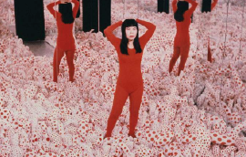
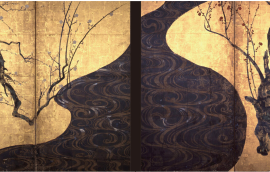
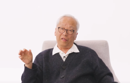
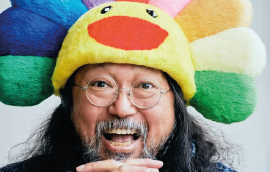
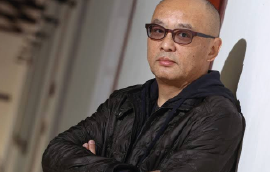
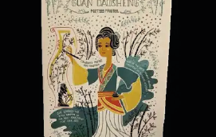
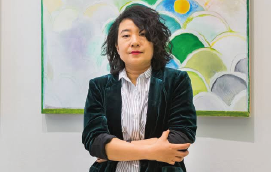

En Galería de Arte Shinobi Ninjutsu, fusionamos
el arte con el espíritu ancestral oriental.
Somos un espacio dedicado a mostrar la riqueza
visual y espiritual del arte Chino y Japonés,
explorando estilos ilustrativos, pintura tradicional
y caligrafía con alma.
Aquí, cada trazo cuenta una historia, cada obra
es un susurro del pasado y una expresión del
presente.
Creemos en el poder del arte como camino,
como filosofía, como un acto ninja de belleza y
resistencia cultural.
Aquí encontrarás una selección de artistas importantes
de las culturas de Japón y China.
Nombre: Hayao Miyazaki
País: Japón
Estilo: Ilustración Japonesa y Anime
Hayao Miyazaki es un director de cine de animación, animador, ilustrador, empresario, mangaka y
productor de anime japonés, de renombre internacional y con una carrera de cinco décadas.
Junto con Isao Takahata fundó Studio Ghibli, un estudio de películas y animación.

Nombre: Yayoi Kusama
País: Japón
Estilo: Minimalismo y el arte pop
Es una figura en la escena artística, provocó cambios significativos en el minimalismo y
el arte pop al utilizar la repetición de manera única, especialmente con los lunares.
Su impacto artístico se extendió a la performance, la escultura y las instalaciones, ya que
buscaba difuminar las fronteras entre uno mismo y lo infinito.

Nombre: Kōrin Ogata
País: Japón
Estilo: Artes Decorativas
Quien hizo contribuciones a la escuela de pintura Rinpa.
Fundió habilidosamente la estética con técnicas innovadoras, insuflando nueva vida en las artes decorativas.
El énfasis de Ogata en diseños, paletas de colores vibrantes y detalles intrincados
añadió una vitalidad al arte japonés.

Nombre: Hiroshi Sugimoto
País: Japón
Estilo: Fotografía artistica
Su trabajo captura la belleza atemporal como ningún otro.
Con su cámara,captura la esencia de paisajes y maravillas arquitectónicas magníficas,
resaltando sus cualidades atemporales y sobrenaturales.

Nombre: Takashi Murakami
País: Japón
Estilo: Arte japonés y cultura Pop
Se erige como un pionero en la escena artística, acuñando el término «Superflat»
para describir su fusión de arte tradicional japonés con la cultura pop moderna.
Su influencia va más allá del lienzo, impactando en la moda, la animación y la cultura popular.

Nombre: Zhang Xiaogang
País: China
Estilo: Surrealismo
Las pinturas en su serie Bloodline son predominantemente retratos monocromáticos y estilizados de los chinos,
generalmente con ojos grandes y depilados oscuros, posados de una manera rígida que recuerda deliberadamente
a los retratos familiares de los años 50 y 60. Recientemente, también creó esculturas, traduciendo por primera vez
en tres dimensiones muchos personajes del tipo vistos en su serie de retratos "Bloodlines, Gran Familia".
Nombre: Chang Dai-chien
País: China
Estilo: Impresionismo y Expresionismo
Chang Dai-chien, pintor tradicional chino, uno de los más cotizados de su país.
Nació en una familia artística con dificultades económicas, cuyos miembros se habían convertido al catolicismo romano.
Aparte de la pintura tradicional de su país también cultivó estilos próximos al impresionismo y al expresionismo.

Nombre: Guan Daosheng
País: China
Estilo: Pintura con bambú
Guan Daosheng pintora, calígrafa y poetisa china de la dinastía Yuan.
Era la esposa del calígrafo Zhao Mengfu, a menudo considerado como el mayor artista del período Yuan temprano.
Su hijo era Zhao Yong. El Emperador Ren fue un gran coleccionista de los pergaminos de los tres.
Nombre: Qi Baishi
País: China
Estilo: Retratista y pintor constumbristas
Qi Baishi interiorizó los elementos de la pintura tradicional y los desarrolló considerablemente.
Sus pinturas muestran su habilidad para representar las cosas mediante estructuras simples trazadas
con rápidas y habilidosas pinceladas.

Nombre: Duan Jianyu
País: China
Estilo: Arte visual
El estilo de las pinturas de Duan Jianyu se basa en la realidad cotidiana y luego
evoluciona para desvanecerse y deslizarse lentamente hacia el mundo de la mente.
Este tipo de técnica narrativa aparece constantemente en las creaciones de la artista.
X
Contáctanos
Esperamos tener noticias suyas pronto.
Galería de Arte Shinobi Ninjutsu
China y Japón, Juntos por el Arte.